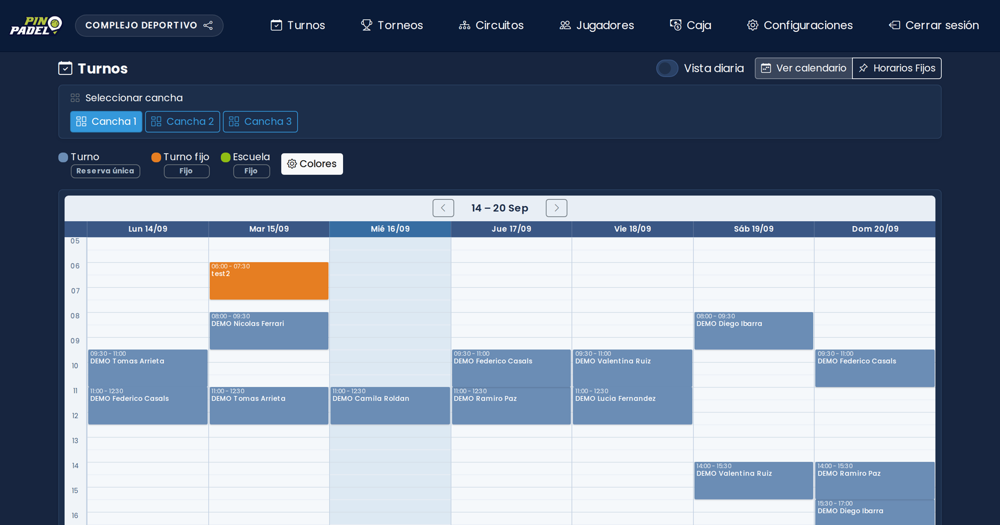
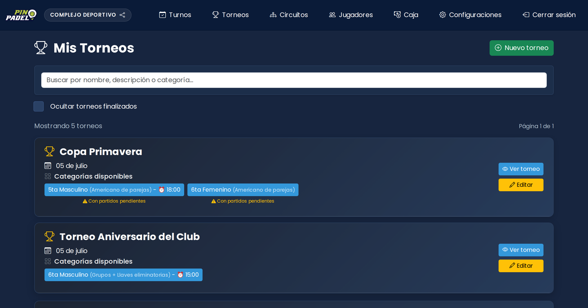
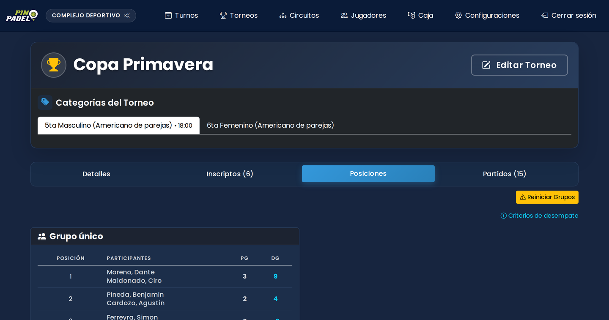
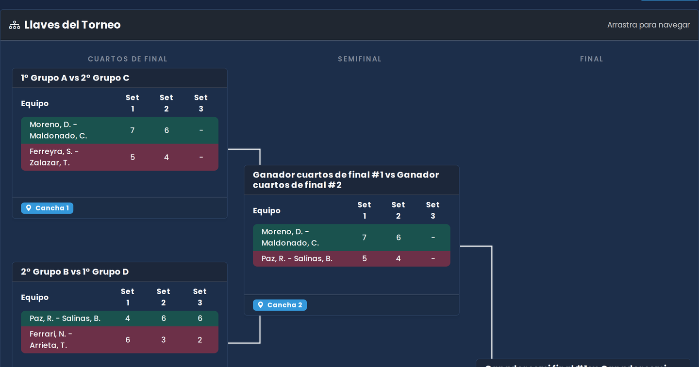
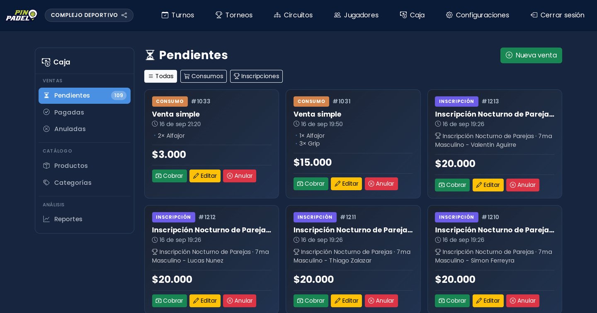
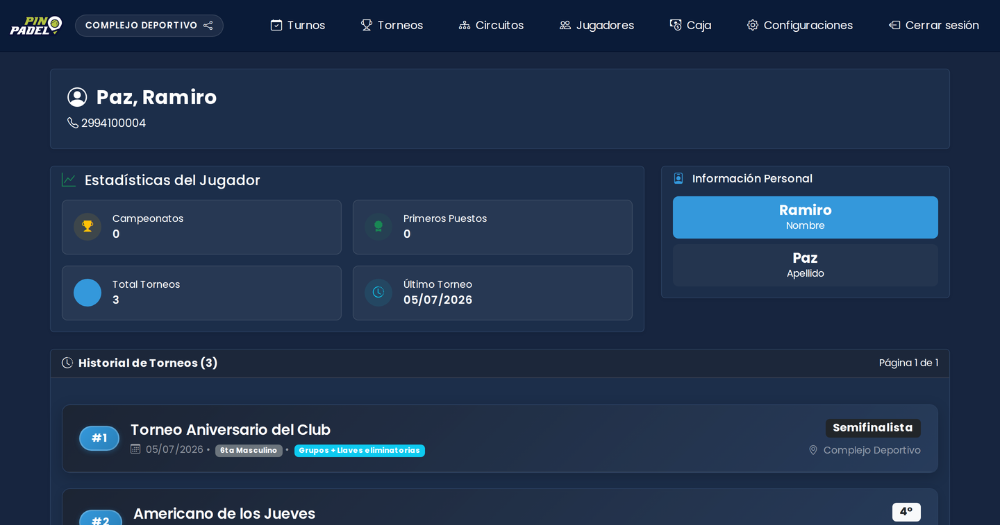

Turnos y canchas
Grilla semanal por cancha, con turnos fijos que se repiten solos y admiten excepciones por fecha. Cada tipo de turno lleva su color, así se lee de un vistazo qué está alquilado y qué está libre.
Turnos, torneos y caja de un complejo de pádel en un solo sistema. Los jugadores se inscriben solos y el club deja de administrar por WhatsApp y planilla.

La plataforma cubre las tres cosas que un club de pádel hace todos los días: alquilar la cancha, correr el torneo y cobrar. Estos son los módulos que operan hoy.
Grilla semanal por cancha, con turnos fijos que se repiten solos y admiten excepciones por fecha. Cada tipo de turno lleva su color, así se lee de un vistazo qué está alquilado y qué está libre.
Americano, Americano de parejas y Clásico: los tres que se juegan de verdad en un club, cada uno con su forma de inscribirse y su forma de competir. Al iniciar, el sistema arma grupos, equipos, fixture y tabla en una sola operación: si algo falla, no queda nada a medias.
Cada jugador se inscribe solo, sin compañero. Juegan todos contra todos, y la pareja va cambiando partido a partido: el puntaje es individual.
El conocido súper 8 o súper 12. Se anotan en parejas ya armadas y juegan todas contra todas: la pareja no se rompe en todo el torneo.
El de toda la vida: primero zonas de grupos y después llaves de eliminación directa. Los clasificados de cada zona pasan al cuadro y de ahí se sale perdiendo.
Consumos del buffet e inscripciones de torneo en un mismo mostrador, con pagos parciales y cuatro medios de cobro.
297 plantillas pre-generadas cubren de 6 a 32 parejas, con los byes ya resueltos. Nadie dibuja el cuadro a mano.
El club comparte un link corto y se anotan solos: cada jugador por su cuenta, o la pareja completa, según el formato. Nadie necesita crear cuenta ni instalar nada.
Cada jugador acumula torneos jugados, posiciones y categorías. El club lo usa como catálogo para armar la próxima fecha.
Varios torneos forman una serie con puntaje configurable por posición. Las tablas se recalculan solas al cargar cada resultado.
Quien organiza torneos en distintas sedes las gestiona todas desde el mismo panel, sin una cuenta por club.
Pantallas reales de la plataforma, tomadas de un entorno de prueba con un club, un torneo y una semana de turnos armados a propósito. Los jugadores son inventados; el software es el que se instala.
La semana de una cancha: cada turno con su horario, su cliente y el color del tipo de reserva. Se cambia de cancha con un clic y los horarios fijos se pintan solos.

Los torneos del club con sus categorías y el formato de cada una. Un torneo puede correr varias categorías a la vez, cada una con su propio cuadro.

Adentro de una categoría: detalles, inscriptos, posiciones y partidos en cuatro pestañas. La tabla se reordena sola con cada resultado cargado.

El cuadro de eliminación con los resultados por set y la cancha asignada a cada partido. Al cargar un resultado, el ganador aparece en la ronda siguiente.

Lo que falta cobrar, en una sola pantalla: consumos del buffet e inscripciones de torneo, con el detalle de cada venta y el total pendiente del día.

El perfil de un jugador: torneos jugados, posición en cada uno y cuándo fue el último. Se arma solo con los resultados que el club va cargando.
Del anuncio a la premiación, sin una planilla de por medio.
Fecha, sede y una categoría por cuadro, cada una con su formato.
Se comparte un enlace corto y se anotan solos, por jugador o por pareja.
Un botón arma grupos, equipos, fixture y tabla de posiciones.
Cada set mueve las posiciones y completa la ronda siguiente.
Las posiciones van al historial y al circuito; la caja queda saldada.